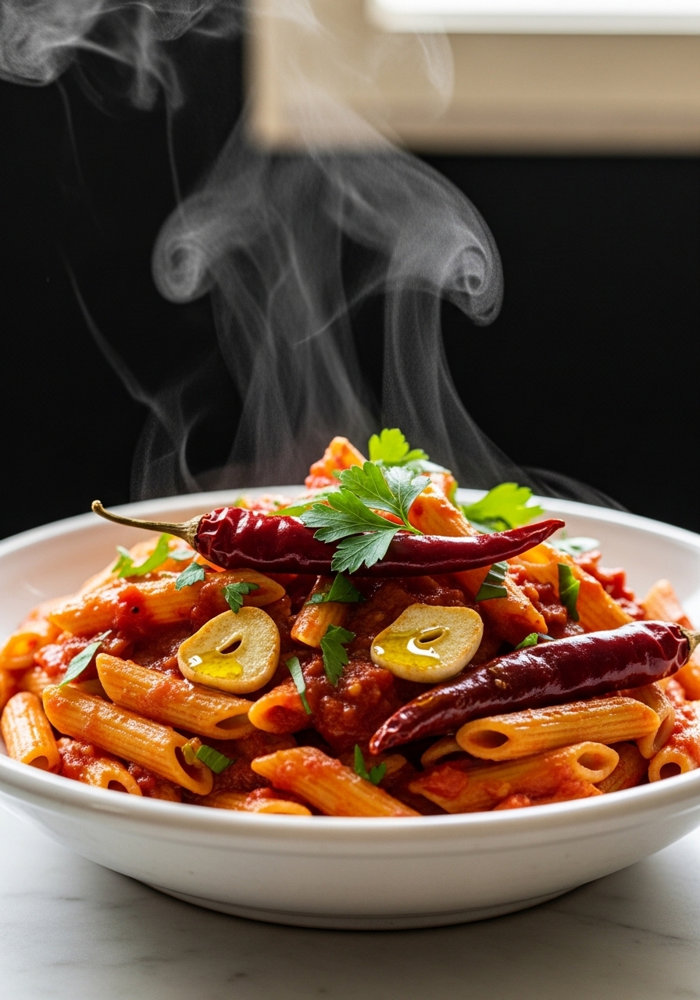
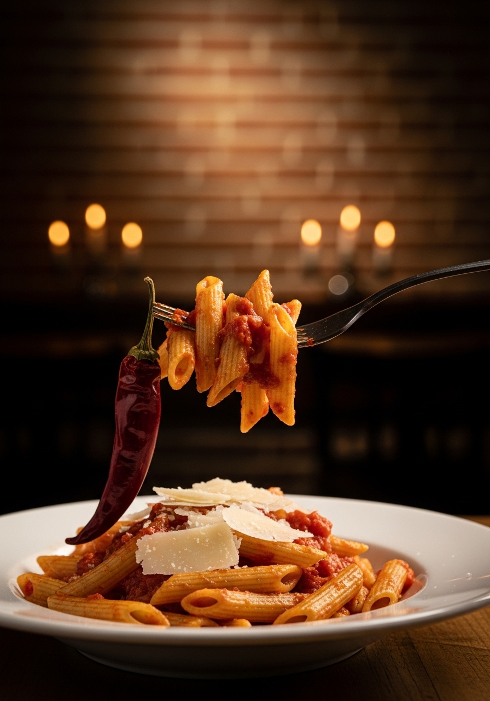

L'arrabbiata è la pasta più essenziale di Roma: pomodoro, aglio, peperoncino e olio extravergine d'oliva. Nient'altro. Niente cipolla, niente carne, niente panna. La semplicità è la sua forza — e il segreto è saper usare quei quattro ingredienti al massimo del loro potenziale. Il nome viene dal peperoncino che fa 'arrabbiare' chi la mangia, facendogli salire il sangue alla testa. La ricetta originale è senza pancetta (quella è l'amatriciana), senza acciughe (quella è la puttanesca), senza cipolla. Solo aglio e peperoncino nell'olio, poi pomodoro di qualità, poi la pasta. In 25 minuti.

25 MinL'arrabbiata è uno di quei piatti romani dove ogni famiglia ha la 'ricetta vera'. La versione più tradizionale e semplice è solo aglio, peperoncino, pomodoro e olio — niente cipolla. La cipolla ammorbidisce il piatto e lo avvicina a un sugo generico; l'aglio invece dà il carattere pungente che distingue l'arrabbiata. Il prezzemolo finale è menzionato in alcune fonti storiche e in molte cucine romane tradizionali — altri lo considerano superfluo. Il Pecorino Romano grattugiato sopra è controverso: i puristi lo escludono (niente formaggio sul pesce, niente formaggio sull'arrabbiata piccante), i romani comuni lo usano liberamente. Scegli la tua versione, ma l'aglio e il peperoncino sono non negoziabili.
Le penne rigate sono il formato canonico dell'arrabbiata — le righe trattengono il sugo e i fori centrali catturano pezzi di pomodoro in modo che ogni boccone sia pieno di sapore. I rigatoni sono un'ottima alternativa, più grandi e con un buco più largo. I bucatini funzionano bene per chi vuole un formato più tradizionale romano. La pasta corta è preferita perché il sugo si accumula nella forma invece di scivolar via come su formati lunghi come spaghetti o linguine. Mai usare pasta fresca o all'uovo con l'arrabbiata — è sempre pasta secca di semola.
Ingredienti
Procedimento

Il sugo all'arrabbiata si conserva in frigorifero per 4-5 giorni in un barattolo chiuso, e migliora dopo 24 ore. È ottimo anche come base per la pizza, come intingolo per il pane, o come salsa per le polpette. Si può congelare per 3 mesi. Per una variante più ricca, aggiungi alla fine una manciata di olive nere di Gaeta e capperi dissalati — diventa qualcosa a metà tra l'arrabbiata e la puttanesca, non canonica ma deliziosa. Per una versione vegana, il piatto è già naturalmente vegano: nessun ingrediente di origine animale nella ricetta base.
No — la ricetta originale romana dell'arrabbiata usa solo aglio, non cipolla. La cipolla addolcisce e ammorbidisce troppo il sapore, avvicinando il piatto a un sugo generico. L'aglio è il carattere distintivo dell'arrabbiata. Se aggiungi la cipolla ottieni comunque una buona pasta, ma non l'arrabbiata autentica.
Abbastanza da 'arrabbiare' — deve creare una leggera sensazione di calore persistente, non bruciare. La dose standard è 2-3 peperoncini secchi per 200g di pasta. Regola secondo la forza del tuo peperoncino: le scaglie di peperoncino essiccate variano molto di piccante. Inizia con meno e aggiungi a piacere.
Sì, in estate con pomodori maturi e saporiti (San Marzano freschi, Roma, cuore di bue). Pelali prima (incidi una X, sbollenta 30 secondi, elimina la pelle). I pelati in scatola sono più affidabili e concentrati durante tutto l'anno — la San Marzano DOP in scatola è spesso superiore ai pomodori freschi fuori stagione.
L'acidità eccessiva dipende quasi sempre dalla qualità dei pomodori. Usa San Marzano DOP. Se il sugo è comunque acido, aggiungi un pizzico di zucchero (non più di mezzo cucchiaino) o un goccio d'olio EVO a fine cottura per bilanciare. La cottura lunga del sugo riduce anche naturalmente l'acidità concentrando gli zuccheri.
Tradizionalmente il Pecorino Romano — salato e pungente, si abbina al carattere forte del peperoncino e del pomodoro molto meglio del Parmigiano più delicato. Detto questo, molte famiglie romane usano il Parmigiano. Alcuni puristi non mettono nessun formaggio sull'arrabbiata piccante. Scegli tu.